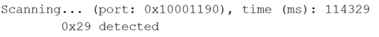
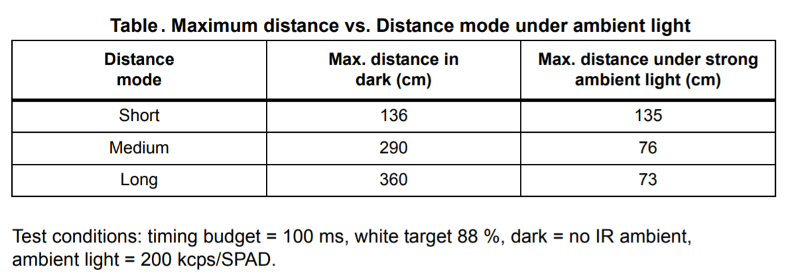
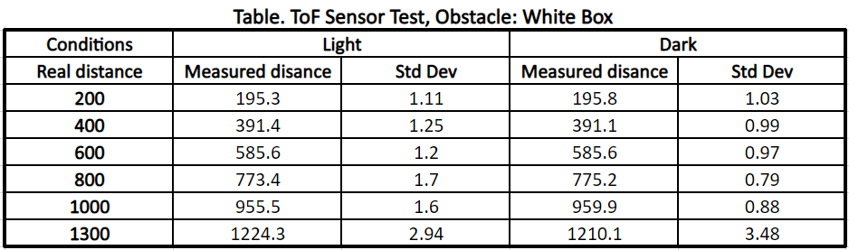
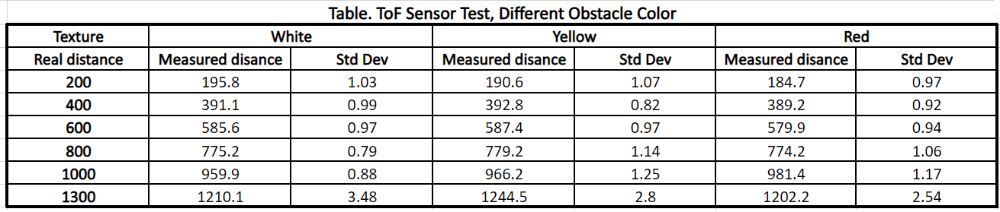
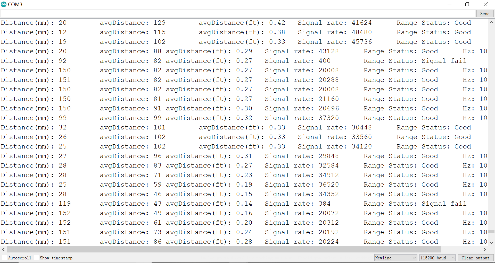
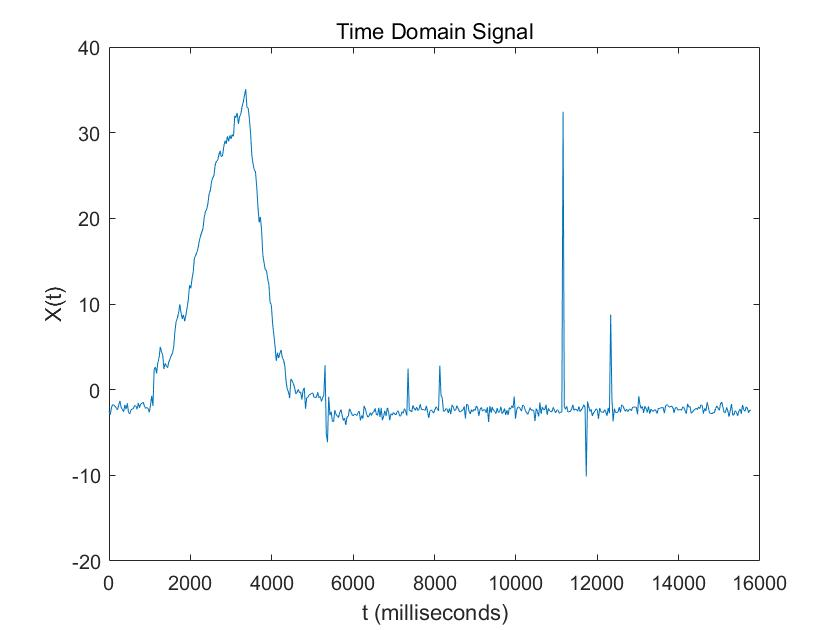
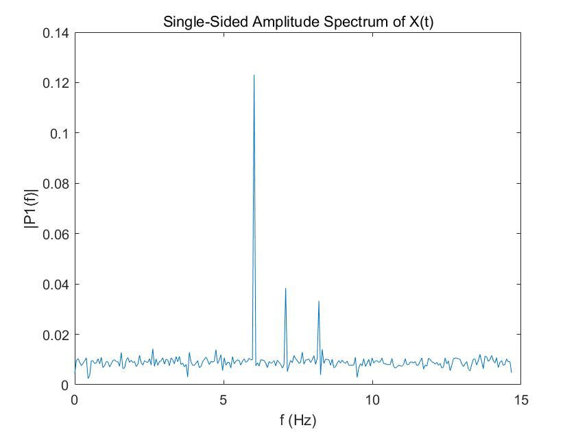
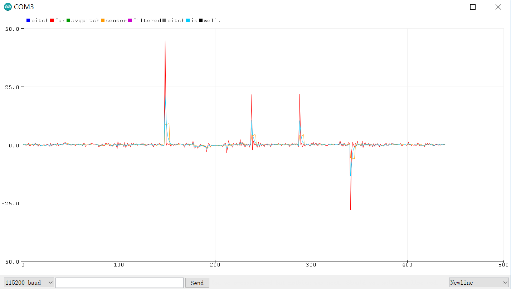
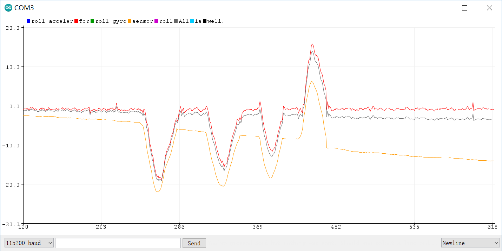
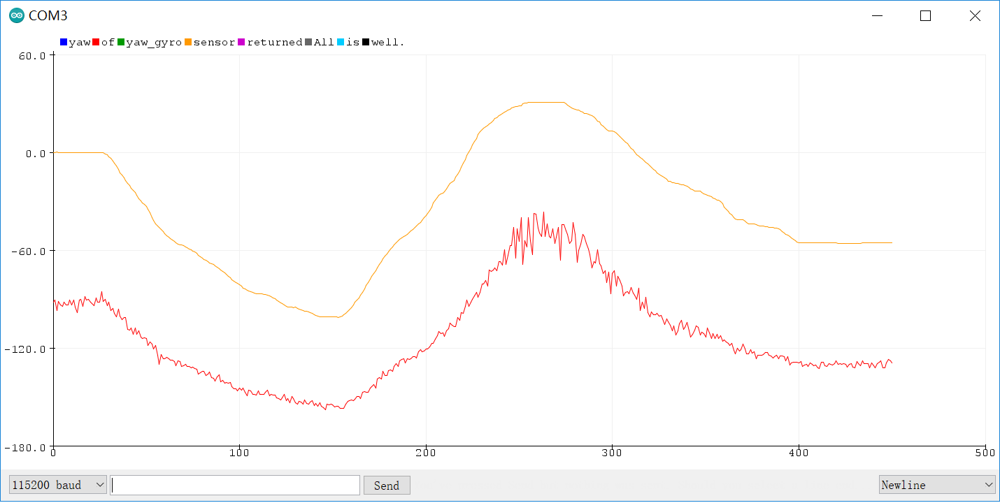

Parts Required
1 x SparkFun RedBoard Artemis Nano
1 x USB cable
2 x 4m ToF sensor
1 x 9DOF IMU sensor
1 x Qwiic connector
1 x Ruler or graph paper
Lab 3(a): Time of Flight Sensors
I2C Address
To detect the I2C address of the ToF sensor, I attached it with the Qwiic connection (SDA/SCL2) and uploaded the Example 'Wire_I2C' to the Artemis board. Port 0x10000E9C detected the ToF sensor, and the I2C address is 0x29[1]. I noticed that in some manuals the I2C address is 0x52(Binary:01010010), while in other guidance it is 0x29(Binary:0101001). They are both correct. Adding a '0' at the end of the 0x29 to make it become a byte, we get the 0x52.
Distance Mode
The ToF sensor has three modes, that optimize the ranging performance given the maximum expected range. Long distance mode can detect obstacles as far as 4m in the dark situation. However, it will be impacted by the ambient light a lot. Short distance mode is more immune to ambient light while the maximum ranging distance is limited to 1.3m[1].
Given that we would test the robot with the light in general and I don't have a very long ruler, I chose to perform the following tests with short distance mode . However, if the robot is going to move pretty fast, I will change it to be long distance mode.ToF sensor Range, Accuracy, Repeatability, Ranging time
I set the ToF sensor to be in short distance mode and used the 'testToF.ino' to do the measurement. I calculated the average distance and standard deviation of the 100 measurements, which are going to tell the accuracy and repeatability of the sensor. First, I used a white box as an obstacle and put it at 200mm, 400mm, 600mm, 800mm, 1000mm, 1300mm to get the measured distance. I also compared the result with the lights on and off. Here are the results. The error increases when the distance becomes longer. Turning on or off light doesn't influence a lot for the short distance mode.
I used cardboard, wooden, and foam as different textures of the obstacles and found the results were very different. The distance got from the wooden board seemed to be more accurate under 600mm compared to the other two textures. Additionally, when the obstacle is foam, the distance detected by the ToF sensor would be longer. However, in long distance, the accuracy of the three is not high.

The measurement frequency is around 10.16Hz, or 98.43ms. This is the same as the default inter-measurement period, 100ms. Here is the demo video.Two ToF Sensors
I2C only allows one address-per-device. However, the default I2C addresses of identical ToF sensors are the same. Fortunately, we can change the addresses in software during initialization with the help of XSHUT pins[2]. I connected the XSHUT pins to A15, A16 pins on the Artemis board separately, which should be in the OUTPUT Mode.
pinMode(15,OUTPUT); //sensor#1 XSHUT
pinMode(16,OUTPUT); //sensor#2 XSHUT
// Reset all sensors,
digitalWrite(15,LOW); digitalWrite(16,LOW);
delay(10);
digitalWrite(15,HIGH); digitalWrite(16,HIGH); // bring out of reset
//Begin sensor#1, XSHUT HIGH
digitalWrite(16,LOW); //keep #1 awake(XSHUT pin HIGH), others shutdown(XSHUT pin LOW)
distanceSensor1.setI2CAddress(0x30); //change the I2C address
if (distanceSensor1.begin() != 0) //Begin returns 0 on a good init
{
Serial.println("Sensor1j failed to begin. Please check wiring. Freezing...");
while (1)
;
}
//Keep sensor#1 awake, and bring sensor#2 out of reset
digitalWrite(16,HIGH);
if (distanceSensor2.begin() != 0) //Begin returns 0 on a good init
{
Serial.println("Sensor2 failed to begin. Please check wiring. Freezing...");
while (1)
;
}
Serial.println("Sensors online!");
In the main loop, two sensors will start rangeing and get distances separately.
Here is the demo video.
Distance Sensor Comparation
Many distance sensors are based on infrared transmissions, such as Amplitude, IR triangulation, IR Time of Flight[3].An Amplitude Distance Sensor contains an IR LED transmitting the light and a Photo Diode detecting the reflected light. The measurement distance is less than 10cm. Amplitude Distance Sensors are very cheap and easy to use. However, it is sensitive to surface color, texture, and ambient light. Triangulation has very simple circuitry and is less sensitive to color, texture, and ambient light. The medium-range is 0.05-1m. However, this kind of sensor has a low sample rate (around 2Hz) and still cannot work in high ambient light. Additionally, triangulation is bulky. As for the ToF sensor, it is mostly insensitive to color, texture, and ambient light and owns a high sample rate (4KHz). However, the sampling frequency (7-30Hz) is low and the processing is more complicated.
Timing Budget
The timing budget is the time required by the sensor to perform one range measurement, while the inter-measurement period is the delay between two ranging operations and should be equal or larger than the timing budget. I looked up the manual and it recommends 20, 33, and 100 ms for short, medium and long distance modes respectively[1]. Frequency and accuracy are a trade-off: the longer the inter-measurement period, the more accurate the result will be. Given that the robot will move fast, I will choose to sacrifice accuracy. So I decided to set the timing budget and inter-measurement period to be 20.Sensor Status
The ToF sensor has two parameters, signal and sigma, that tell whether the measurement is valid or not. Sigma is the estimation of the standard deviation of the measurement, and the signal represents the amplitude of the signal reflected from the target and detected by the device. If both of them are outside the limits, the ranging is will be regarded as invalid[1].I tried to move the box really fast, but the sensor worked pretty well. I didn't find any data is invalid. Then I put my hand right in front of the sensor and then move away quickly to simulate the dramatic change in distance. A few measurements failed because the signal is out of range.

If such a situation happened when the robot is moving fast, it may not have enough time to stop or swerve to avoid a collision. Therefore, I plan to make the robot stop immediately when ToF sensors fail in measurement.Lab 3(b): IMU
I2C Address
I attached the IMU's SDA, SCL with the SDA3, SCL3 in the Artemis board and run the 'Wire_I2C' example. Port 0x10001190 detected the IMU module, and the I2C address is 0x68, which is the same as the address written in the datasheet[4].AD0_VAL
AD0_VAL is the value of the last bit of the I2C address. In the IMU 20948, the ADR jumper is closed. Therefore, we should set it to be 0. Otherwise, the sensor will fail in initialization.Sensor Values as rotate, flip and accelerate the board
From the IMU sensor, we can get the Tri-axial accelerations, angular velocities, Magnetic field intensities. When the sensor stays still, the angular velocities from the gyroscope are nearly zero. ax, ay is also around zero, while az is 973mg on average, the earth's gravitational acceleration. When flipping down the sensor, az will become negative. As for rotation, angular velocities will change a lot. Here is the demo video.
Calculate Pitch and Roll from the Accelerometer Data
Roll, pitch and roll are the angles of rotation around the xyz axis, respectively. According to the following equations, I can calculate the pitch and roll based on the accelerations:pitch = ax / az
roll = ay /az
After that, I map the angle to [-90, 90] degrees with the following code.
ax=sensor->accX();
ay=sensor->accY();
az=sensor->accZ();
pitch=atan2(ax,az);pitch=pitch*180/M_PI;
roll=atan2(ay,az);roll=roll*180/M_PI;
if(abs(pitch)>90){ //change the range to be [-90,90]
pitch=(pitch/abs(pitch))*180-pitch;
}
if(abs(roll)>90){
roll=(roll/abs(roll))*180-roll;
}
When I put the sensor on a flat surface, the output pitch and roll were 0.54, -1.33 separately.
When I lined up the sensor against a wall, the pitch was 88.42 and the roll was 88.40.
Therefore, I calibrated the pitch and roll with the following equations.
pitch_calibrated = 1.0117 * pitch + 0.5463
roll_calibrated = 1.0030 * roll + 1.3340
Try Tapping the Sensor and Plot the Frequency Response
When tapping the IMU sensor, I found there will be some spikes, which are unwanted noise.
Here is a time domain figure. In 2-4s, I slowly changed the pitch. After that, I tapped the sensor several times.I used Matlab to transfer it in to the frequency domain.

There are some high frequency spikes in 5-10Hz. So I chose to use a 5Hz cut-off frequency as the Professor suggessed. Therefore the RC = 1 / (2*pi*f) = 1 / (2*pi*5) =0.0318. Given that my sampling period is 30ms, alpha is T / (T+RC) =0.4854. I noticed that the angle values will jitter due to the uncorrelated noise. Therefore, I tried to average every 5 angles and regraded it as the new output. Here are the results. Red represents raw pitch data. Orange stands for the average output. Blue is the pitch data after the complementary filter.
The averaged output seems to be the most robust one. However, it has some time lag. The low pass filter can reduce the influence of tapping but can not remove it totally. Related code is attached below.
float alpha=0.4854;
pitch_new=alpha*pitch+(1-alpha)*pitch_old;
roll_new=alpha*roll+(1-alpha)*roll_old;
pitch_old=pitch_new;
roll_old=roll_new;
Compute Pitch, Roll, and Yaw from the Gyroscope
Gyroscope gives the angular velosities. By integrating, we can get the tilt angles.
wx=sensor->gyrX();
wy=sensor->gyrY();
wz=sensor->gyrZ();
long time_current;
time_current=millis();
float dt;
dt=(float)(time_current-time_previous)*0.001;
time_previous=time_current;
pitch_gyro=pitch_gyro-wy*dt;
roll_gyro=roll_gyro+wx*dt;
yaw_gyro=yaw_gyro+wz*dt;
Angular values obtained by gyroscope are less noisy compared to the ones get by the accelerometer, but they are going to drift with time.
In addition, when the sampling frequency decreases, the accuracy decreases.
This is because when calculating the current tilt angles by integrating the angular velocities, we assume that the angular velosities don't change during the sampling period.
Here is the demo video.
Sensor Fusion
Given that the gyroscope drifts a lot, I would like to trust more on the accelerometer. I chose the alpha here to be 0.8.
alpha=0.8;
pitch=pitch_gyro*(1-alpha)+pitch_acceler*alpha;
roll=roll_gyro*(1-alpha)+roll_acceler*alpha;

Magnetometer
According to the following equations, we will be able to know the xm, ym.
xm = myICM.magX()*cos(pitch) - myICM.magY()*sin(roll)*sin(pitch) + myICM.magZ()*cos(roll)*sin(pitch); //these were saying theta=pitch and roll=phi
ym = myICM.magY()*cos(roll) + myICM.magZ()*sin(roll);
In the demo video, I was facing geographically North and the x-axis of IMU sensor was pointing to north pole at the begining.
xm and ym got the maximum value when x axis or y axis were pointing to the north pole of the magnetic field, which is geographically South.
We can calculate the yaw by the xm, ym: yaw = atan2(ym/xm). I compared the yaw calculate by gyroscope and magnetometer respectively. Given that the gyro_yaw always starts at zero, there is a constant difference between the two values. The trend of yaw value from the magnetometer remains almost the same as the one from the gyroscope. However, magnetometer's yaw had larger noise and in some range and was not so accurate. All in all, I would not like to use the magnetometer in the future lab.

Reference
[1] VL53L1X Datasheet.
[2] Connecting Multiple VL53L1X ToF Sensors.
[3] FastRobots-3-Sensors, part I Lecture
[4] ICM20948 9DoF Motion Sensor Datasheet.